Sumérgete en el fascinante mundo del arte japonés tradicional en nuestra galería dedicada al
ukiyo-e y el arte zen. Nuestra colección reúne obras emblemáticas de maestros como Hokusai
y Hiroshige, transportándote a la elegancia y serenidad de la naturaleza y la vida cotidiana en
el antiguo Japón.
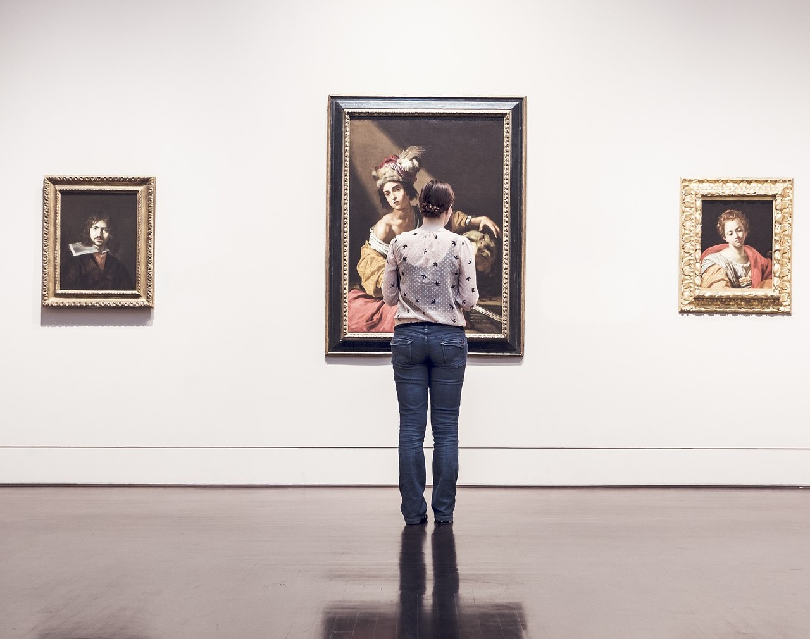
Eventos y Exposiciones:
Descubre una variedad de eventos emocionantes que ofrecemos regularmente. Desde exposiciones
temporales de artistas contemporáneos hasta retrospectivas de los grandes maestros del ukiyo-e,
nuestra galería es un espacio dinámico donde el arte japonés cobra vida. Además, no te pierdas
nuestras conferencias y charlas impartidas por expertos en el tema.
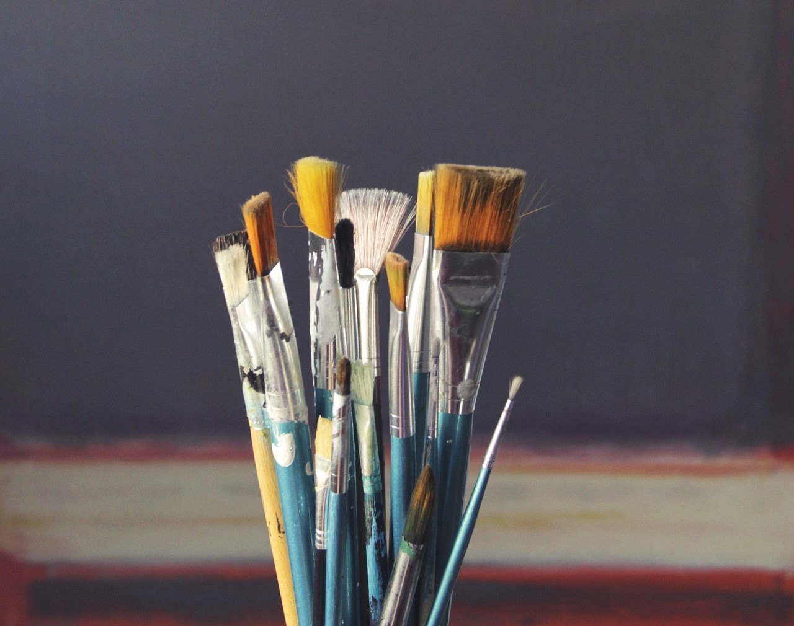
Cursos y Talleres:
En Art Gallery, también nos enorgullecemos de ofrecer cursos y talleres para aquellos interesados
en aprender más sobre esta rica tradición artística. Desde clases de caligrafía y pintura sumi-e
hasta talleres de grabado en madera, nuestros programas educativos están diseñados para
brindarte una experiencia inmersiva y educativa en el arte japonés.
Eventos
Junio:
"Paisajes del Edo"
Detalles: Exhibición de paisajes urbanos y rurales de Edo, con obras de Hiroshige y
Hokusai.
Julio:
"Belleza Femenina en Ukiyo-e"
Detalles: Retratos de mujeres por artistas como Utamaro y Harunobu.
Agosto:
"El Zen en la Pintura"
Detalles: Obras de maestros Zen como Hakuin Ekaku y Sesshū Tōyō, enfocadas en la
meditación.
Septiembre:
"Samuráis y Guerreros"
Detalles: Pinturas y grabados que retratan la vida y la valentía de los samuráis.
Ukiyo-e y Arte Zen
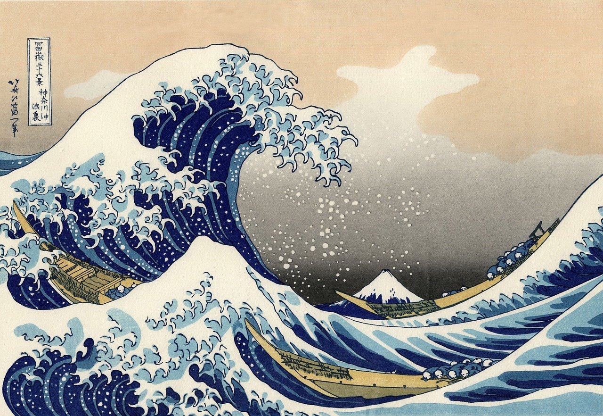
Introducción al Ukiyo-e
El Ukiyo-e, que literalmente significa "pinturas del mundo flotante", es un estilo de arte japonés
que se originó en el período Edo (1603-1868). Este arte se caracteriza por sus impresiones en madera,
que retratan escenas de la vida cotidiana, paisajes, actores kabuki y figuras históricas. El Ukiyo-e
refleja
la cultura y las costumbres de la sociedad japonesa de la época, capturando la belleza efímera y
cambiante del mundo.
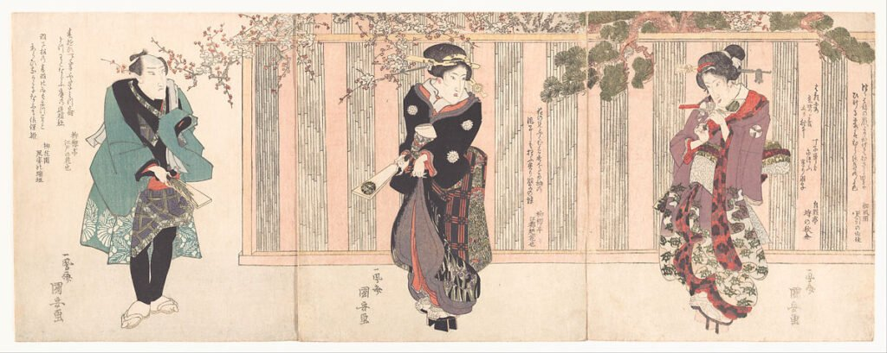
Características del Ukiyo-e:
Las obras de Ukiyo-e se destacan por su uso vívido del color, la composición dinámica y el detalle
meticuloso. Los artistas ukiyo-e, como Hokusai y Hiroshige, dominaron la técnica de la xilografía
para crear impresiones que transmiten emociones, atmósferas y narrativas fascinantes. Esta forma
de arte influyó profundamente en movimientos artísticos posteriores, como el impresionismo en
Europa.
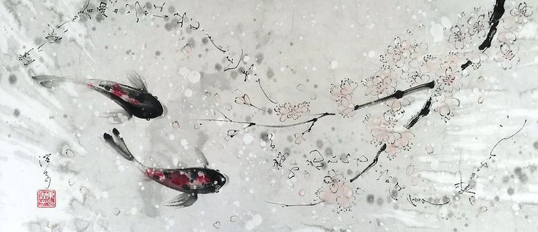
El Arte Zen y su Influencia:
El arte zen, por otro lado, se centra en la esencia de la simplicidad, la tranquilidad y la conexión
con la naturaleza y la espiritualidad. Los monjes zen han practicado durante siglos la caligrafía, la
pintura y la jardinería zen como expresiones de su búsqueda de la iluminación y la armonía interior.
Estas obras reflejan la filosofía zen de vivir en el momento presente y encontrar la belleza en la
simplicidad.
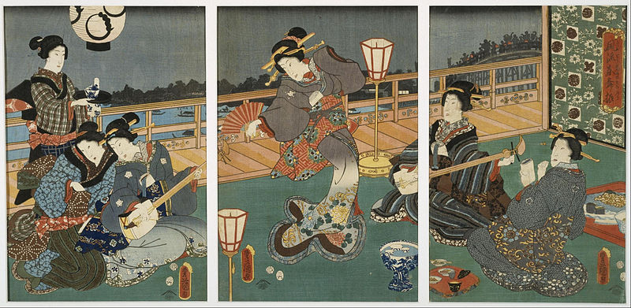
Encuentro de Ukiyo-e y Arte Zen:
La fusión del Ukiyo-e y el arte zen ha dado lugar a obras fascinantes que combinan la elegancia
estética de la impresión japonesa con la serenidad y profundidad del arte zen. Esta convergencia
creativa ha producido piezas que trascienden lo meramente visual, invitando al espectador a
contemplar la vida, la naturaleza y la espiritualidad desde una perspectiva renovada.
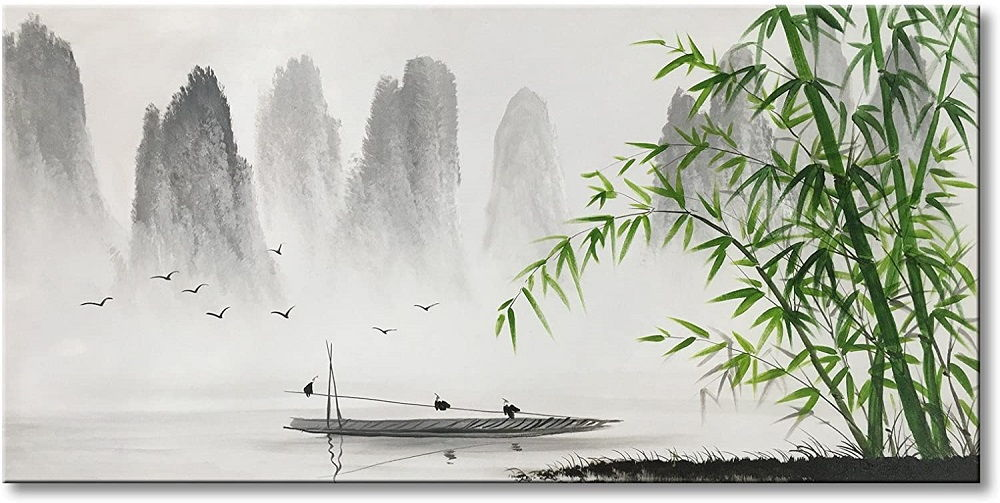
Explorando la Página de Arte:
En esta página dedicada al Ukiyo-e y al arte zen de Japón, podrás explorar una colección única de
obras maestras, aprender sobre los artistas destacados de este género, descubrir la influencia del
arte japonés en el mundo occidental y sumergirte en la belleza y la profundidad de estas expresiones
artísticas.
Obras destacadas
Obras emblemáticas de Ukiyo-e:
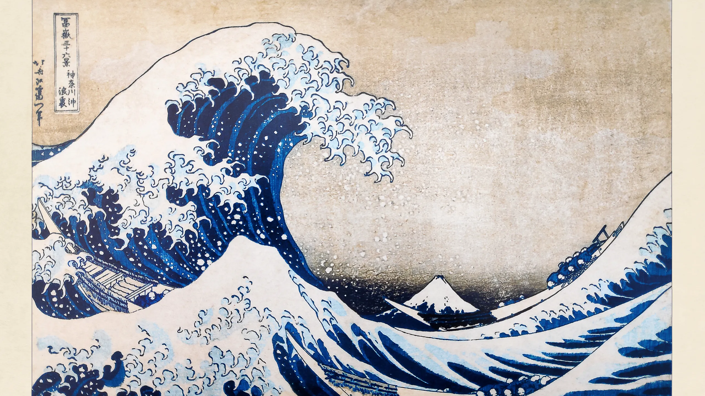
La gran ola de Kanagawa
Autor: Katsushika Hokusai
Descripción: Esta icónica obra muestra una enorme ola
amenazando a
pequeños botes, con el monte Fuji en el fondo. Es parte de la serie "Treinta y seis vistas del
monte Fuji".
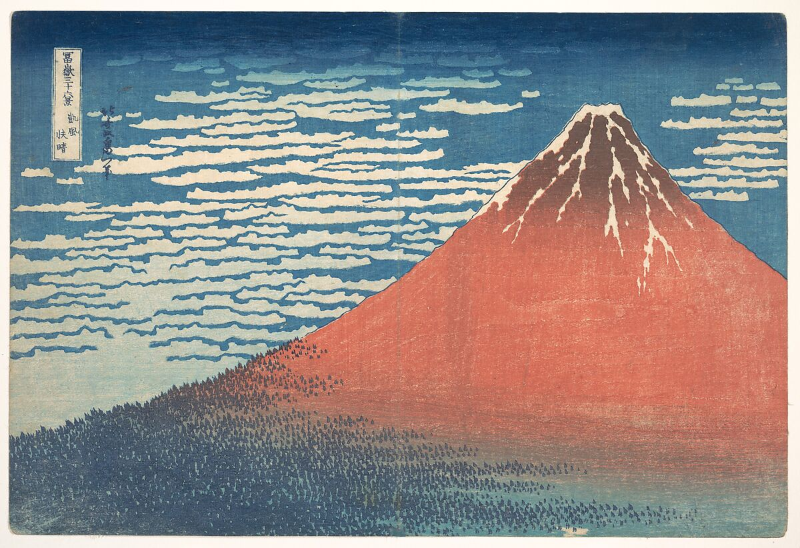
El monte Fuji rojo
Autor: Katsushika Hokusai
Descripción: Representa el monte Fuji bajo la luz del amanecer,
teñido
de rojo. También es parte de la serie "Treinta y seis vistas del monte Fuji".
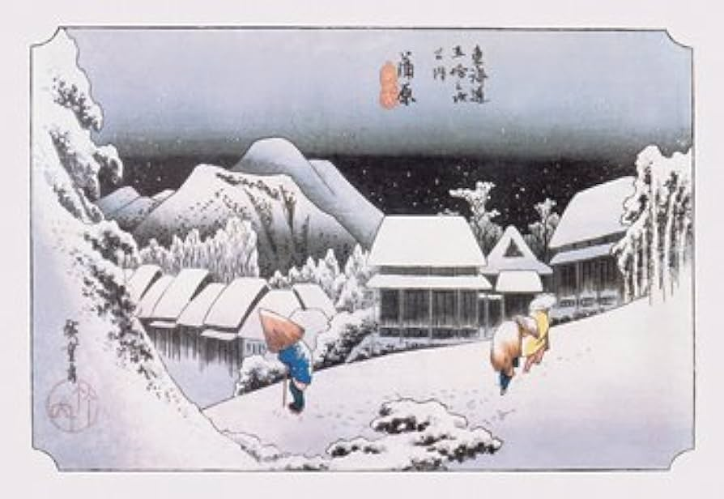
Nieve en Kambara
Autor: Utagawa Hiroshige
Descripción: Muestra una escena invernal tranquila con tres
viajeros
caminando bajo la nieve. Pertenece a la serie "Cincuenta y tres estaciones de Tōkaidō".
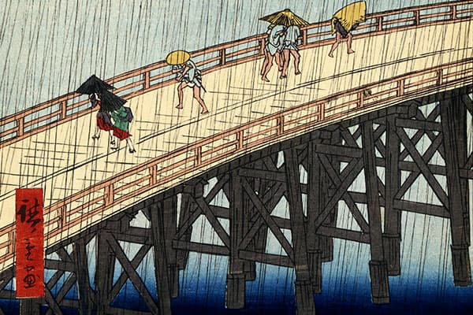
El puente Ōhashi en Atake bajo una lluvia repentina
Autor: Utagawa Hiroshige
Descripción: Retrata a transeúntes bajo una lluvia torrencial
en el puente Ōhashi. Es parte de la serie "Cien vistas famosas de Edo".
Obras emblemáticas del arte Zen:
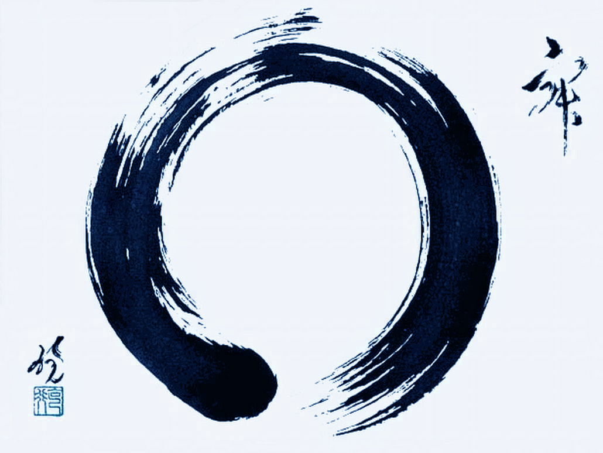
El círculo ensō
Autor: monjes Zen
Descripción: Un círculo pintado con una sola pincelada
continua, simboliza
iluminación y armonía.
Bosque de bambúes
Autor: Hakuin Ekaku
Descripción: Representa un denso bosque de bambúes,
simbolizando
resistencia y flexibilidad en la práctica Zen.
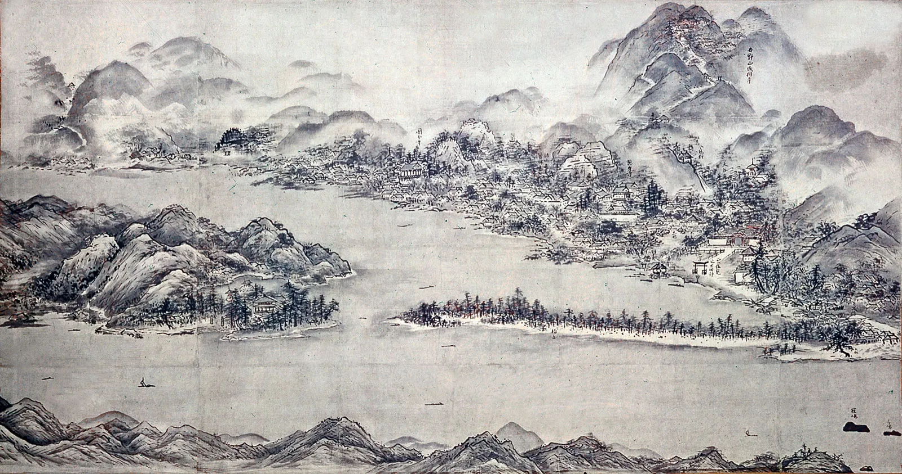
La montaña y el agua
Autor: Sesshū Tōyō
Descripción: Muestra la armonía entre montañas y agua,
elementos
esenciales en la filosofía Zen.
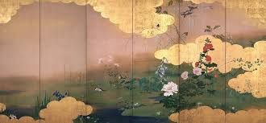
Pájaros y flores en cuatro estaciones
Autor: Sesson Shūkei
Descripción: Captura la belleza de la naturaleza a lo largo del
año, reflejando la transitoriedad de la vida.
Conoce donde comprar los mejores materiales para tus proyectos.
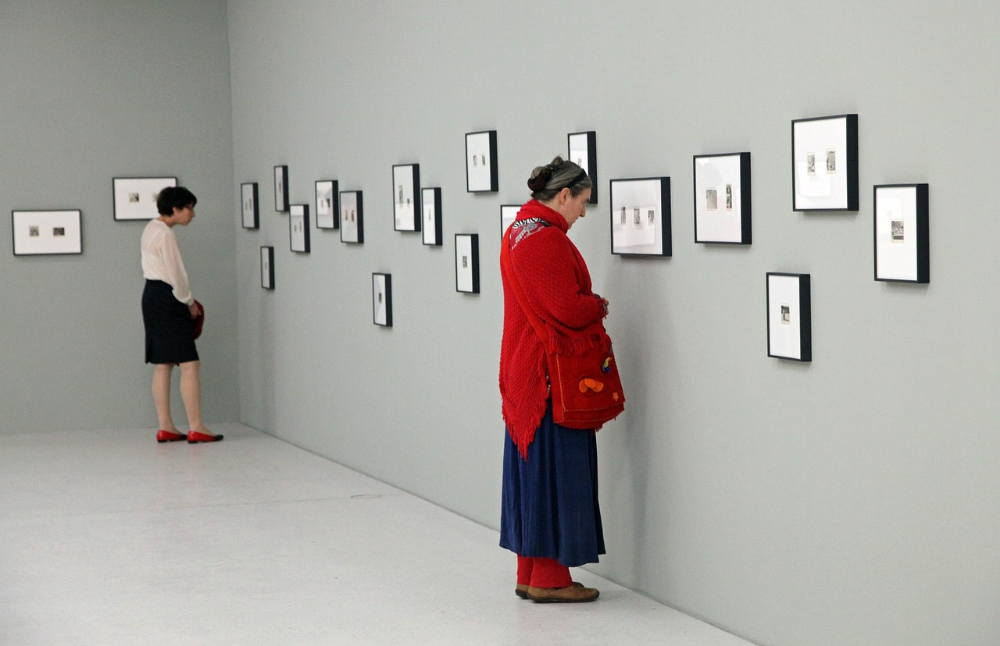
Informate sobre los horarios de nuestras exposiciones y todos los eventos del mes.
Enterate de todas las novedes y noticias del mundo del arte con nuestra aplicación móvil,
disponible para android y IOs.
Proximamente abriremos la convocatoria para nuestro curso anual de Nuevos Talentos.
No te olvides de visitar nuestras redes sociales y conocer sobre todo lo que tenemos para
ti.
Últimas novedades en el arte
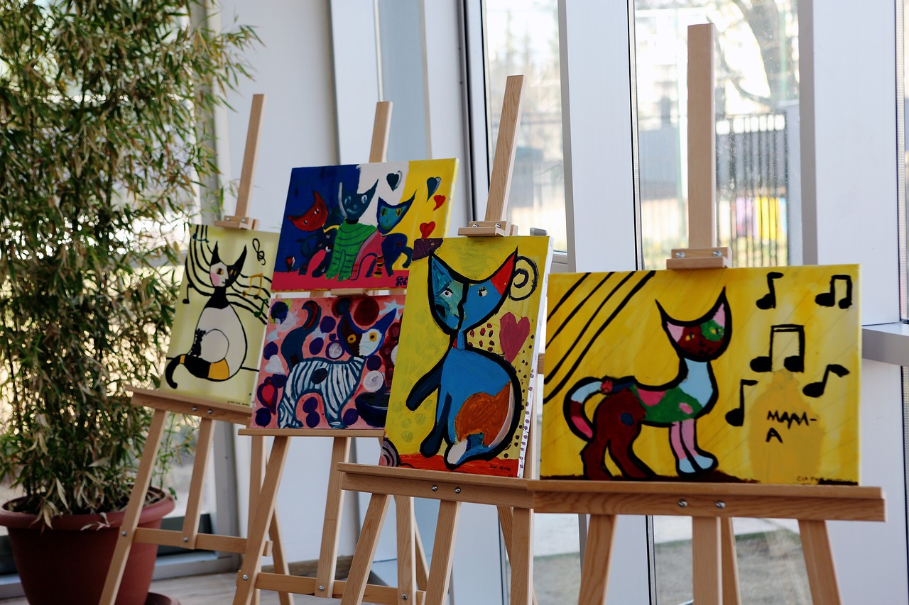
Exposiciones de arte profesionales y de principiantes.
"Descubierta una Pintura Perdida de un Maestro Renacentista en una Antigua Mansión"
En una emocionante revelación para el mundo del arte, arqueólogos descubrieron una pintura
perdida del renombrado maestro renacentista Giovanni Bellini. La obra, titulada "Madonna con
el Niño",
se encontraba oculta detrás de una pared en una antigua mansión italiana durante una renovación.
Los expertos creen que esta obra maestra del siglo XV captura la esencia del período renacentista y
arroja nueva luz sobre la técnica y la visión artística de Bellini.
Inauguración de la Exposición de Arte Contemporáneo "Reflejos Urbanos"
La vibrante ciudad acoge una nueva ola de expresión artística con la apertura de la
exposición
"Reflejos Urbanos"en la Galería Metropolitana. Esta cautivadora muestra presenta obras de
destacados
artistas contemporáneos que exploran la interacción entre el entorno urbano y la experiencia humana.
Desde graffiti hasta instalaciones multimedia, cada pieza invita al espectador a reflexionar sobre la
complejidad y la belleza de la vida en la ciudad moderna.
Clases de dibujo y pintura, desde principiante hasta profesional.
Exposiciones de esculturas y diferentes tipos de arte
Street Art en Ascenso: Transformando Ciudades en Galerías al Aire Libre
Desde los callejones oscuros hasta los muros de los edificios más emblemáticos, el arte
callejero
está dejando una marca indeleble en las ciudades de todo el mundo. Con su espíritu audaz y su
mensaje provocativo, los artistas callejeros están transformando entornos urbanos en vibrantes galerías
al aire libre. Esta forma de arte contemporáneo desafía las convenciones y trae la expresión artística
directamente a las calles.
El arte es el reflejo del alma humana, capturado en lienzo.
Arte Digital: Explorando Nuevas Fronteras Creativas
El mundo del arte se está expandiendo hacia lo digital con una explosión de creatividad sin
precedentes.
Desde esculturas en realidad virtual hasta pinturas generadas por inteligencia artificial, los artistas
están explorando nuevas formas de expresión en el mundo digital. Esta fusión de tecnología y arte
promete redefinir los límites de la creatividad y la imaginación en el siglo XXI.
Explora la belleza oculta en cada trazo y color.
Inauguración de la Exposición de Ukiyo-e en el Museo de Arte Contemporáneo
El Museo de Arte Contemporáneo ha inaugurado hoy una exposición dedicada al
Ukiyo-e, el icónico estilo de grabado japonés del período Edo. La muestra incluye obras maestras de
Hokusai y Hiroshige, ofreciendo una mirada única a la vida y paisajes del Japón del siglo XVIII. La exposición
estará abierta al público hasta el 30 de septiembre, ofreciendo además talleres y charlas sobre la influencia
del Ukiyo-e en el arte moderno.
La influencia del arte en la sociedad moderna
El arte ha desempeñado un papel fundamental en la sociedad a lo largo de la historia, pero
su
influencia en la sociedad moderna es más relevante que nunca. Desde desafiar las normas sociales
hasta promover la conciencia cultural y política, el arte tiene el poder de provocar pensamientos,
emociones y conversaciones que pueden cambiar el curso de la historia. En un mundo cada vez
más conectado y globalizado, el arte actúa como un puente entre diferentes culturas y perspectivas,
fomentando la comprensión y el diálogo entre las personas de todo el mundo.
Artistas Destacados
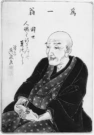
Artista:
Katsushika Hokusai (1760-1849)
Obra Famosa: "La gran ola de Kanagawa".
Contribuciones: Su serie "Treinta y seis vistas del Monte Fuji" es icónica,
redefiniendo el ukiyo-e con su enfoque en paisajes y naturaleza. Además de sus impresiones,
Hokusai creó manuales de dibujo y pinturas de diversos. Estilo: Detallado y dinámico, capturando la esencia de la naturaleza con un estilo
distintivo.
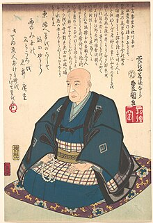
Artista:
Utagawa Hiroshige (1797-1858)
Obra Famosa: "Cien famosas vistas de Edo".
Contribuciones: Hiroshige capturó la belleza de paisajes urbanos y naturales.
Sus composiciones y uso del color son distintivos, influenciando a muchos artistas posteriores,
incluidos los impresionistas europeos. Estilo: Paisajes serenos y coloridos, con un enfoque en la atmósfera y la luz.
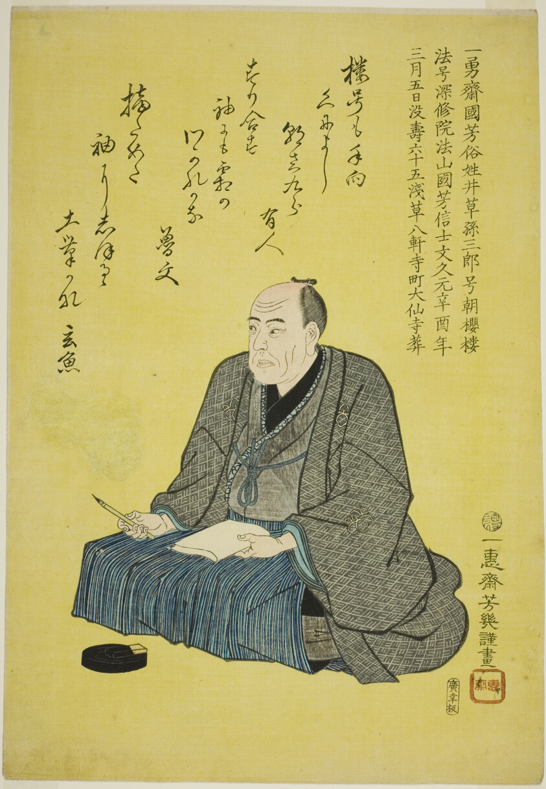
Artista:
Kitagawa Utamaro (1753-1806)
Especialidad: Retratos de mujeres (bijin-ga).
Contribuciones: Utamaro destacó por su habilidad para representar la belleza
femenina, reflejando la elegancia y la moda de la época. Sus obras fueron muy populares en
su tiempo y aún son apreciadas en la actualidad. Estilo: Líneas delicadas y detalladas, capturando la gracia y la feminidad.
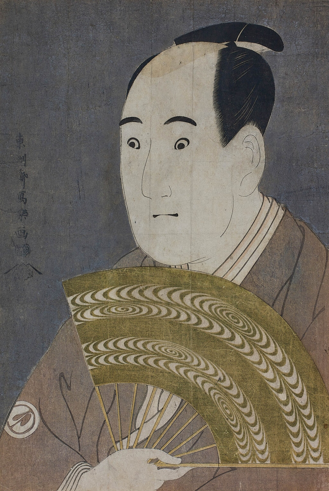
Artista:
Toshusai Sharaku (activo entre 1794-1795)
Especialidad: Retratos de actores kabuki.
Contribuciones: Sharaku es famoso por su estilo único y expresividad en
sus representaciones. Aunque su carrera fue corta, dejó un legado significativo en el arte del
retrato y la representación teatral. Estilo: Expresivo y dramático, destacando las emociones y características de los actores.
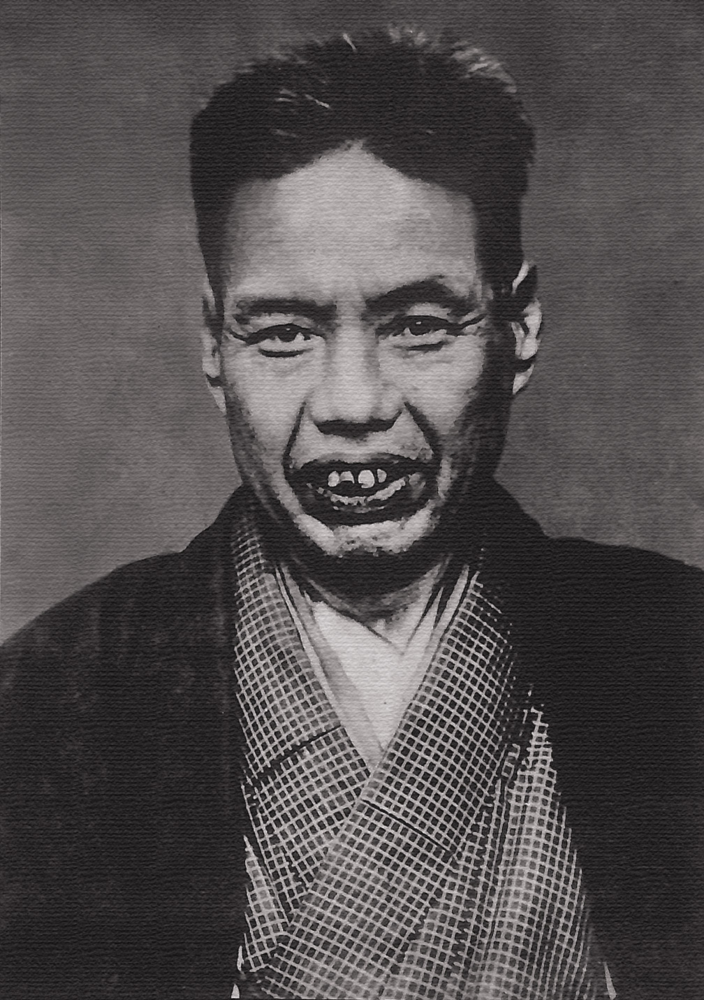
Artista:
Kawanabe Kyōsai (1831-1889)
Especialidad: Caricatura y sátira.
Contribuciones: Kyōsai era un artista versátil que abordaba una amplia
gama de temas en su obra, incluyendo humor y crítica social. Su estilo humorístico y a menudo
satírico lo convirtió en una figura destacada en el mundo del ukiyo-e. Estilo: Innovador y versátil, con un enfoque en la crítica social y el humor.
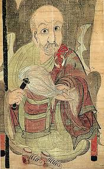
Artista:
Hakuin Ekaku (1686-1769)
Especialidad: Dibujos de ensō (círculos).
Contribuciones: Monje Zen y pintor, Hakuin es conocido por sus ensō que
simbolizan la iluminación y la naturaleza impermanente de la existencia. También creó obras
humorísticas y filosóficas que reflejan su profundo conocimiento del budismo Zen. Estilo: Simplicidad y profundidad, con un enfoque en la espiritualidad y la filosofía
Zen.
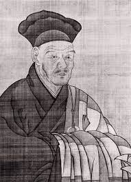
Artista:
Sesshū Tōyō (1420-1506)
Especialidad: Pintura a tinta.
Contribuciones: Sesshū es famoso por sus paisajes que combinan la influencia
china con la estética Zen japonesa. Su habilidad para capturar la esencia de la naturaleza y la
espiritualidad Zen lo convirtió en una figura destacada en la historia del arte japonés. Estilo: Elegante y contemplativo, con un enfoque en la naturaleza y la espiritualidad.
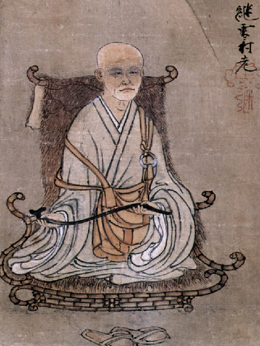
Artista:
Sesson Shūkei (1504-1589)
Especialidad: Paisajes y retratos.
Contribuciones: Pintor Zen cuyo trabajo abarca paisajes, retratos y temas
religiosos. Sus obras reflejan la simplicidad y la profundidad de la práctica Zen, con una atención
especial a la conexión entre la naturaleza y la espiritualidad. Estilo: Minimalista y meditativo, destacando la conexión entre el hombre y la naturaleza.
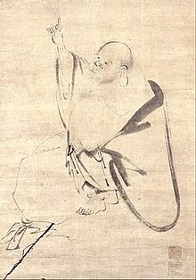
Artista:
Mokuan Reien (activo en el siglo XIV)
Especialidad: Pinturas de tinta.
Contribuciones: Conocido por sus pinturas de tinta que representan la síntesis
del budismo y la estética Zen. Sus obras a menudo muestran escenas de la vida cotidiana
imbuidas de significado espiritual y contemplativo. Estilo: Sencillo y profundo, con un enfoque en la vida cotidiana y la espiritualidad.
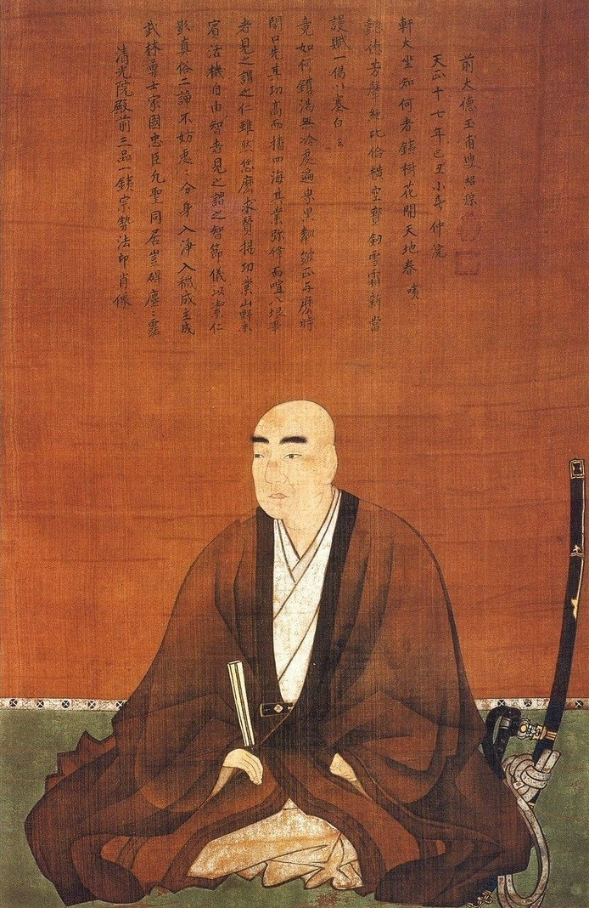
Artista:
Tōhaku Hasegawa (1539-1610)
Especialidad: Pintura de paisajes y naturaleza.
Contribuciones: Maestro en la creación de biombos y pinturas murales,
Tōhaku Hasegawa es conocido por su uso magistral del espacio negativo y su capacidad para
capturar la tranquilidad de la naturaleza en sus obras. Estilo: Sereno y equilibrado, con un enfoque en la simplicidad y el uso del espacio.